全平台累计播放
00
CORE NUMBERS / 核心数据
全平台累计点赞
ACG内容视频
单条最高播放
星塔AI长篇动画累计播放
01 / SELECTED WORKS
代表作品
从玩家兴趣出发，把剧情、角色与版本卖点转化为值得点击、讨论和转发的内容。
AI / 01
PLAY ↗
实现愿望的方法：千都世 VS 极光
借网络热点切入角色关系，以AI战斗视觉补足游戏外的想象空间。
4.5W+ 播放3000+ 点赞110+ 评论1400+ 收藏
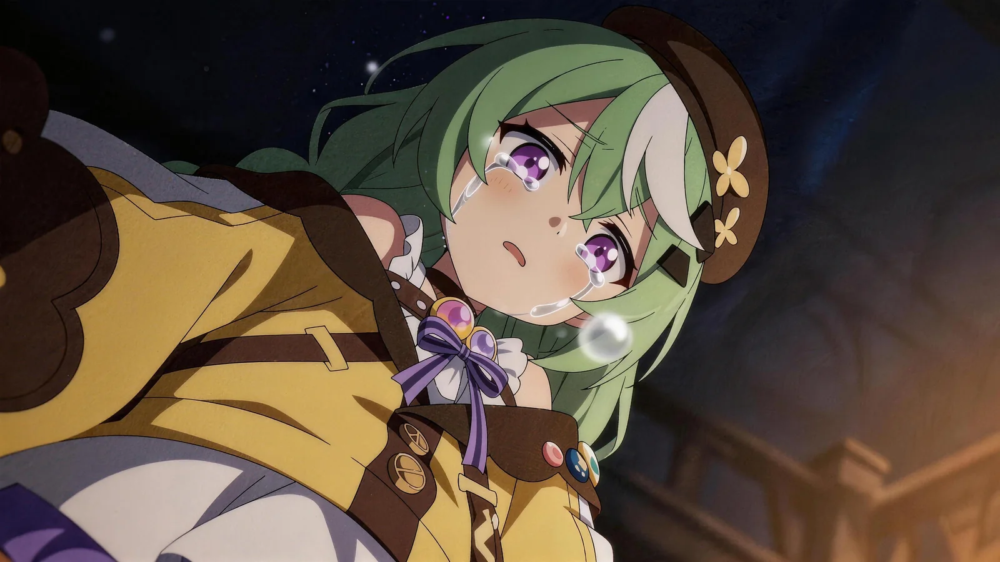
AI / 02 PLAY ↗未闻芳名
以遗憾、羁绊与释怀强化角色在主线之外的情感记忆。
2W+ 播放3000+ 点赞250+ 评论1000+ 收藏
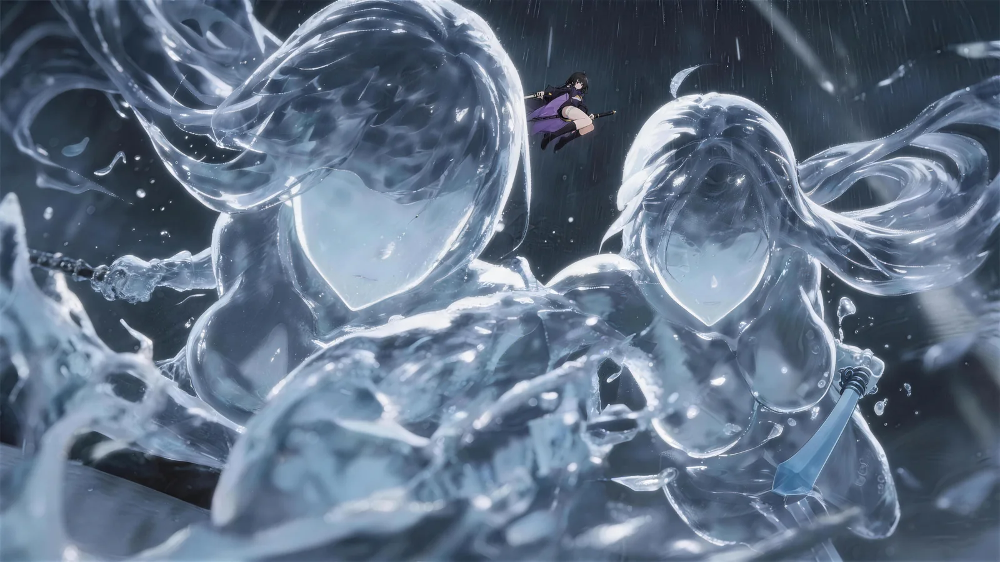
AI / 03 PLAY ↗刀与斧的铮鸣
用武器、动作与画面切换强化冲突，为角色制造视觉记忆点。
3.5W+ 播放1000+ 点赞70+ 评论400+ 收藏
AI / 04
PLAY ↗
星塔旅人 X 日常系的异能战斗
借熟悉的二次元记忆点降低理解门槛，带动新游戏内容传播。
1.5W+ 播放1200+ 点赞80+ 评论400+ 收藏
AI / 05
PLAY ↗
信笺乘风而去
还原并改编角色羁绊与故事氛围，增加玩家对角色与IP的记忆。
1.5W+ 播放1300+ 点赞100+ 评论300+ 收藏
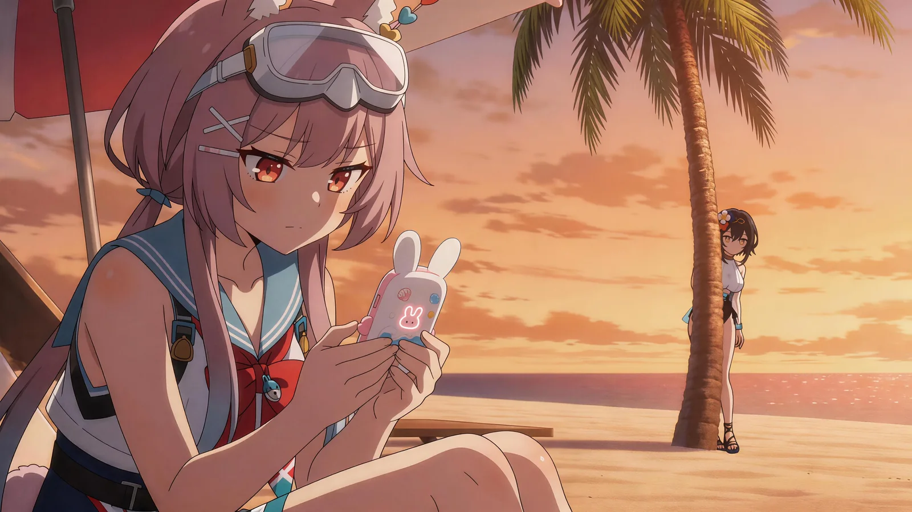
AI / 06 PLAY ↗夏日栖息地
围绕夏日主题进行视觉与氛围表达，适配游戏活动传播节点。
暂未公布，可在网盘观看
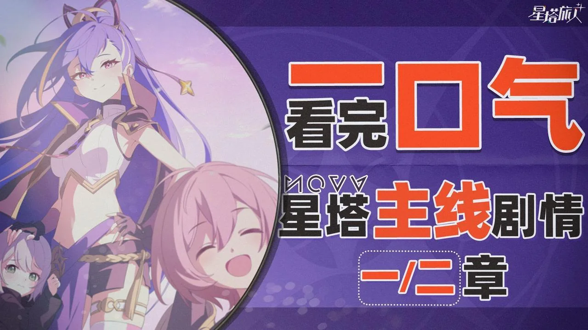
GAME / 01PLAY ↗《星塔旅人》主线第一二章讲解
围绕主线剧情、角色关系与世界观信息，为玩家梳理版本核心内容。
2W+ 播放2100+ 点赞300+ 评论450+ 收藏
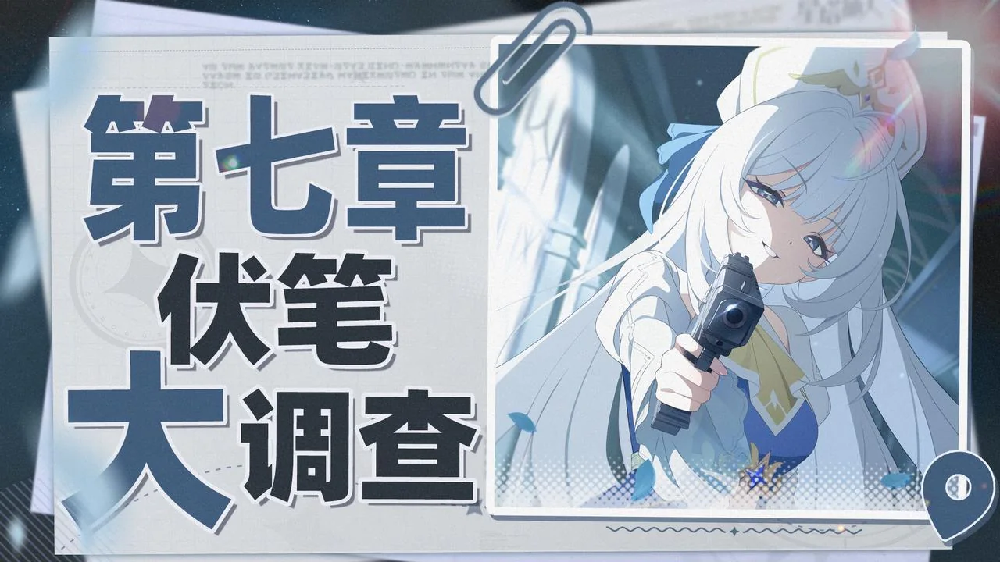
GAME / 02PLAY ↗《星塔旅人》主线第七章解析
拆解剧情伏笔与世界观线索，帮助玩家理解版本叙事并延长讨论周期。
7000+ 播放800+ 点赞130+ 评论110+ 收藏
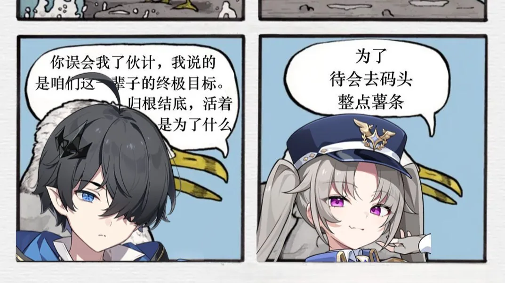
GAME / 03PLAY ↗《星塔旅人》梗百科
用玩家熟悉的社区语言解释游戏梗文化，提升内容亲和力与互动意愿。
7000+ 播放800+ 点赞60+ 评论120+ 收藏
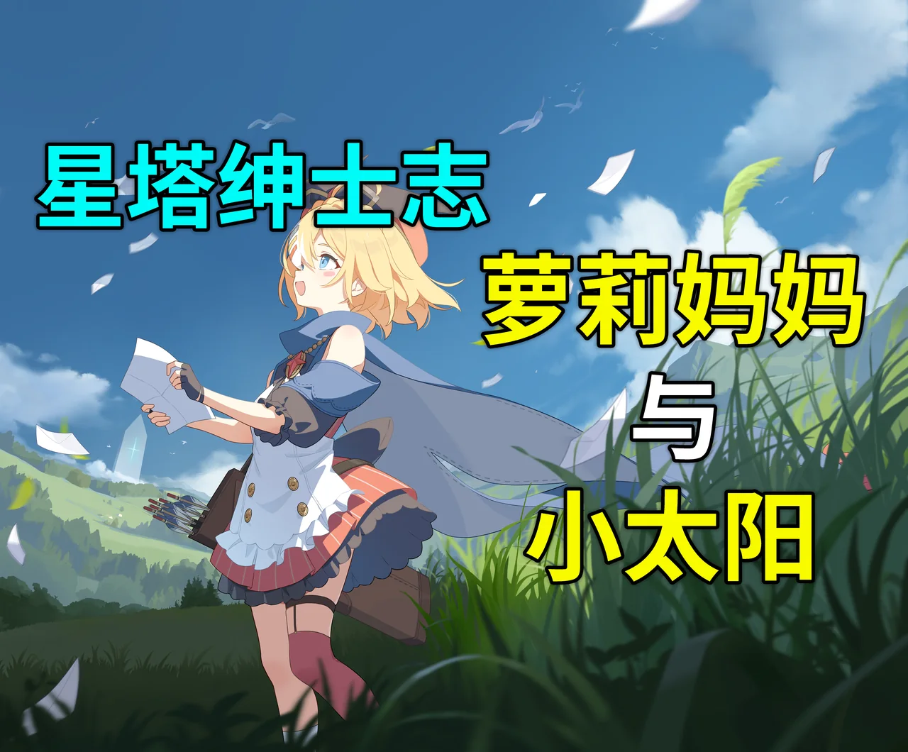
GAME / 04PLAY ↗《星塔旅人》角色鉴赏：多娜篇
从人物设定、剧情表现与角色魅力切入，强化玩家对角色的情感连接。
5000+ 播放800+ 点赞70+ 评论100+ 收藏
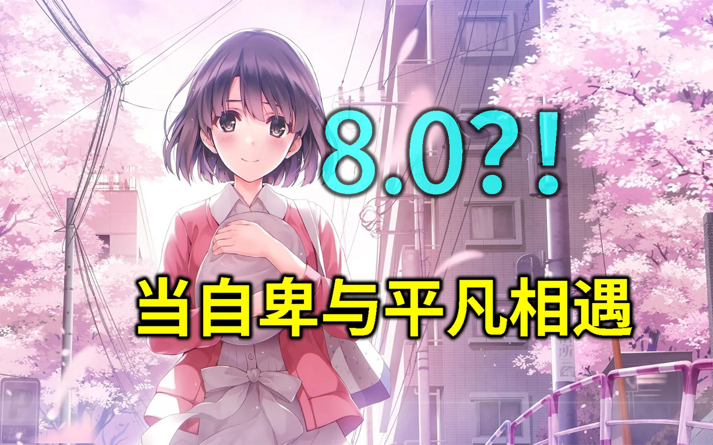
ANIME / 01PLAY ↗《路人女主第二季》动画总结
从角色关系、叙事节奏与观众情绪出发，重新提炼作品核心。
1.5W+ 播放1000+ 点赞200+ 评论300+ 收藏
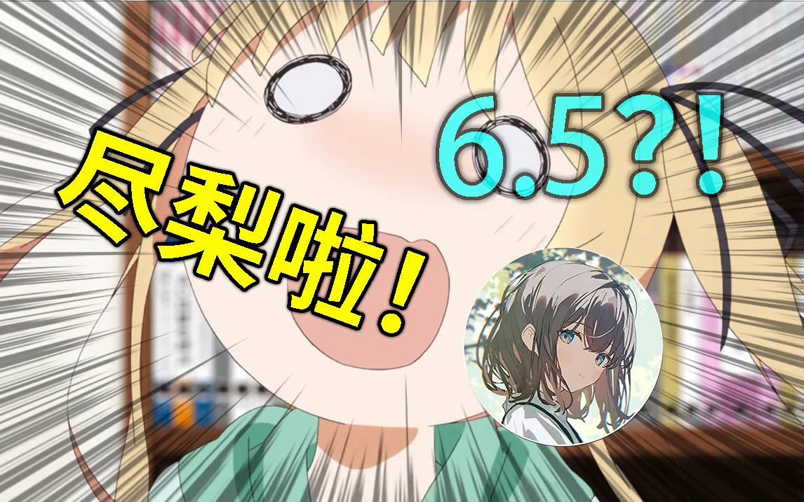
ANIME / 02PLAY ↗《路人女主第一季》动画总结「浅谈番剧」
以角色关系和叙事冲突为线索，提炼第一季的情感推进与作品看点。
5000+ 播放500+ 点赞130+ 评论110+ 收藏
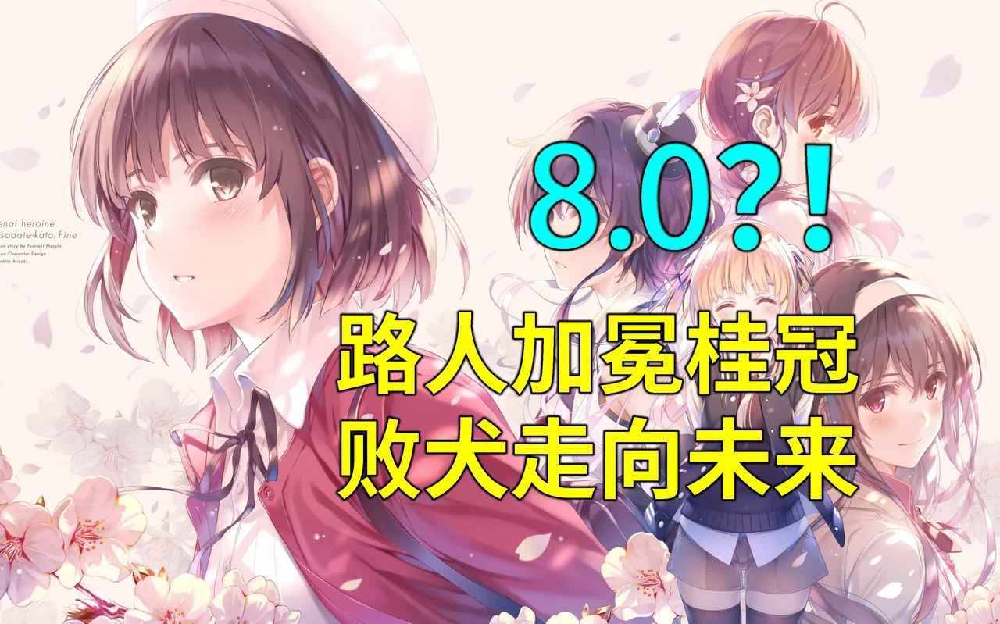
ANIME / 03PLAY ↗《路人女主剧场版》动画总结「浅谈番剧」
解析剧场版如何完成角色成长与关系收束，呈现系列最终的情绪价值。
1W+ 播放700+ 点赞80+ 评论170+ 收藏
02 / KEY PROJECT
星塔攻略组
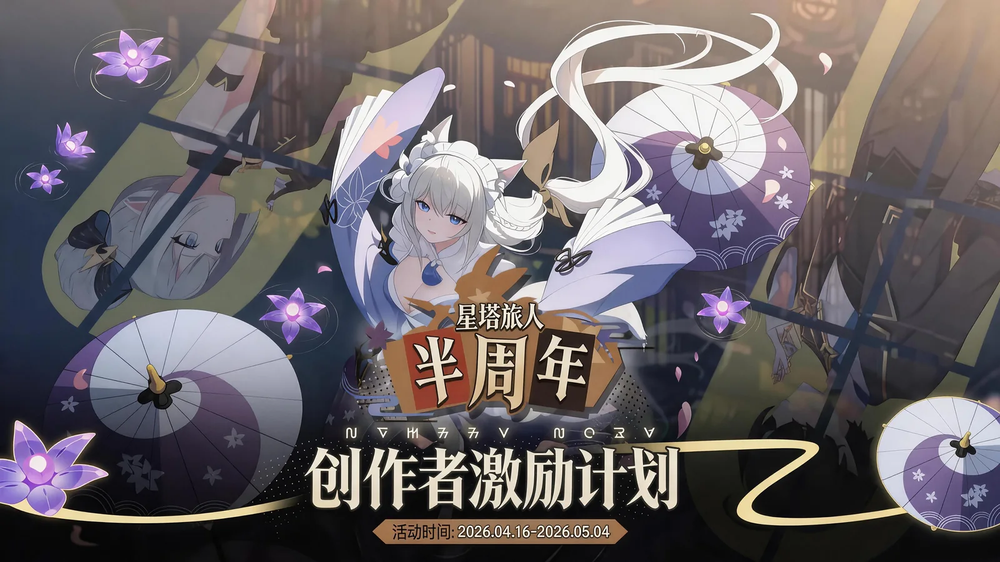
★半周年
优秀创作者
优秀创作者
《星塔旅人》官方扶持“星塔攻略组”内容创作者
项目身份
官方扶持创作者 / 星塔攻略组成员
AI长篇动画
累计播放15W+剧情 / 考据推广
累计播放10W+现金及周边激励
官方项目成果CONTENT PIPELINE / 内容工作流
版本目标理解→玩家兴趣点拆解→选题策划→
脚本设计→AI动画 / 视频制作→发布包装→
数据与评论复盘→后续选题迭代
03 / COMMERCIAL COLLAB
商业合作
能理解产品目标，也能把商业信息包装成用户愿意观看的内容。
01
GAME PROMO / 游戏宣传
内测武侠手游
AI动画宣传片
产出2条AI动画宣传片
负责创意构思、脚本设计、AI画面生成、剪辑与成片交付。
FULL PROCESS
02
PRODUCT VIDEO / 产品推广
“叠叠社”App
商业推广视频
产品卖点 → 视频表达
负责产品卖点提炼、推广脚本和视频制作，具备商业内容交付经验。
DELIVERED
04 / CONTENT METHOD
内容方法论
不是“灵感来了就做”，而是从传播目标出发的可复用内容流程。
?
TOPIC / 选题
选题方法
→
PRODUCTION / 制作
制作流程
- 确定传播目标
- 脚本 / 分镜
- AI生成
- 剪映剪辑
- 标题封面
- 发布
- 复盘
↻
REVIEW / 复盘
复盘维度
- 标题与封面
- 前5-10秒
- 评论区反馈
- 传播价值
- 内容可复用性
05 / LET'S CONNECT
一起创造
有传播力的内容。
许比嘉 香港大学文学院
求职方向：游戏内容运营 / 社区运营 / UGC运营 / 创作者运营 / 游戏宣发内容策划